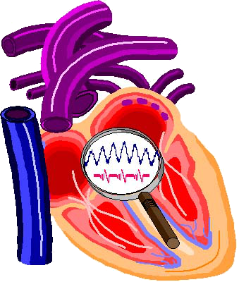

About the Site¶
Host¶
The Phoenix Project operates as a study group of the Twin Cities Section of the Institute of Electrical and Electronics Engineers.
The Phoenix Biorhythm site is hosted on GitHub Pages.
Typography¶
Material for MkDocs directly integrates with Google Fonts. All fonts are taken from that collection.
Body text and titles are set in , a nonserif font.
Code samples are set in , a nonserif, monospace font.
For clients who do not have these fonts, the style sheets specify some standard alternatives.
See also "Privacy".
Palette¶
The site provides both light and dark color schemes:
| Mode | Color Scheme |
|---|---|
| Light | MkDocs default |
| Dark | MkDocs slate |
The primary color is set to blue-grey.
The accent color is set to indigo.
Graphics¶
 The Phoenix Project logo symbolizes the investigation of variation in blood pressure. It is a composite of three images:
- The interior of a human heart and some of the blood vessels,
- An abstract electrocardiogram (ECG) tracing in red, and
- An abstract week-long systolic blood pressure cycle in blue.
The tracings are drawn along two different timescales
The heart-image was taken from Microsoft's Clip Art, a now-retired service. The abstract tracings were drawn, and the entire logo composed, by the Halberg Chronobiology Center.
The Colophon icon is a colorized version of "Wax Seal Ampersand" by Rebecca Sicilia from Noun Project (CC BY 3.0).
 The favicon is "circadian rhythms" by bsd studio from Noun Project (CC BY 3.0).
The favicon is "circadian rhythms" by bsd studio from Noun Project (CC BY 3.0).
Privacy¶
The site uses the privacy plugin built into Material for MkDocs. The plugin:
- Scans the generated HTML for external assets, such as scripts, style sheets, images, and web fonts.
- Downloads them.
- Stores them in the site directory.
- Replaces all references with links to the downloaded copies for self-hosting.
License¶
DRAFT ONLY
License selection not finalized. The options being considered are:
- Phoenix Biorhythm Platform by Christopher Adams is marked with CC0 1.0 Universal


- CC BY 4.0 (Attribution 4.0 International)

The latter is kept as a placeholder because it is the more restrictive of the two.
Phoenix Biorhythm Platform by Christopher Adams is licensed under Attribution 4.0 International

Technologies¶
MkDocs¶
MkDocs is a static site generator that's geared towards building project documentation. Documentation source files are written primarily in Markdown, and configured with a single YAML configuration file
This site uses Markdown, HTML and cascading style sheets.
For full documentation, visit mkdocs.org.
Commands¶
mkdocs new [dir-name]- Create a new project.mkdocs serve- Start the live-reloading docs server.mkdocs build- Build the documentation site.mkdocs -h- Print help message and exit.
Project layout¶
mkdocs.yml # The configuration file.
docs/
index.md # The documentation homepage.
... # Other markdown pages, images and other files.
Theme¶
Macros¶
Macros Plugin Environment¶
General List¶
All available variables and filters within the macros plugin:
| Variable | Type | Content |
|---|---|---|
| extra | dict | |
| config | MkDocsConfig | {'config_file_path': '/Users/chris/github/cadams4341/phoenix-biorhythm-platform/mkdocs.yml', 'site_name': 'Phoenix Biorhythm Platform', 'nav': [{'Home': 'index.md'}, {'About the Site': 'about.md'}], 'pages': None, 'exclude_docs': None, 'not_in_nav': None, 'site_url': None, 'site_description': None, 'site_author': 'Christopher Adams', 'theme': Theme(name='material', dirs=['/Users/chris/github/cadams4341/phoenix-biorhythm-platform/overrides', '/Library/Frameworks/Python.framework/Versions/3.12/lib/python3.12/site-packages/material/templates', '/Library/Frameworks/Python.framework/Versions/3.12/lib/python3.12/site-packages/mkdocs/templates'], static_templates={'404.html', 'sitemap.xml'}, name='material', locale=Locale('en'), language='en', direction=None, features=[], font={'text': 'Cabin', 'code': 'Ubuntu Mono'}, icon=None, favicon='images/circadian-rhythms-32x32.png', logo='images/circadian-rhythms-white.svg', palette=[{'media': '(prefers-color-scheme)', 'toggle': {'icon': 'material/brightness-auto', 'name': 'Switch to light mode'}}, {'media': '(prefers-color-scheme: light)', 'scheme': 'default', 'primary': 'blue grey', 'accent': 'indigo', 'toggle': {'icon': 'material/brightness-7', 'name': 'Switch to dark mode'}}, {'media': '(prefers-color-scheme: dark)', 'scheme': 'slate', 'primary': 'blue grey', 'accent': 'indigo', 'toggle': {'icon': 'material/brightness-4', 'name': 'Switch to system preference'}}]), 'docs_dir': '/Users/chris/github/cadams4341/phoenix-biorhythm-platform/docs', 'site_dir': '/Users/chris/github/cadams4341/phoenix-biorhythm-platform/site', 'copyright': ' Phoenix Biorhythm Platform by Christopher Adams is licensed under CC BY 4.0 |
| environment | dict | system = 'MacOs', system_version = '14.3', python_version = '3.12.1', mkdocs_version = '1.5.3', macros_plugin_version = '1.0.5', jinja2_version = '3.1.3' |
| plugin | LegacyConfig | {'module_name': 'main', 'modules': [], 'render_by_default': True, 'include_dir': '', 'include_yaml': [], 'j2_block_start_string': '', 'j2_block_end_string': '', 'j2_variable_start_string': '', 'j2_variable_end_string': '', 'on_undefined': 'keep', 'on_error_fail': False, 'verbose': False} |
| git | dict | status = True, date [datetime], short_commit = 'a8128e1', commit = 'a8128e16991d4bfc1fc95e8b67c604b565aadffe', tag = '', short_tag = '', author = 'Chris Adams', author_email = '155780943+cadams4341@users.noreply.github.com', committer = 'Chris Adams', committer_email = '155780943+cadams4341@users.noreply.github.com', date_ISO = 'Sat Jan 27 14:26:28 2024 -0600', message = "update 'about' article to match latest decisions", raw = "commit a8128e16991d4bfc1fc95e8b67c604b565aadffe\nAuthor: Chris Adams <155780943+cadams4341@users.noreply.github.com>\nDate: Sat Jan 27 14:26:28 2024 -0600\n\n update 'about' article to match latest decisions", root_dir = '/Users/chris/github/cadams4341/phoenix-biorhythm-platform' |
| macros | SuperDict | context [function], macros_info [function], now [function], fix_url [function] |
| filters | dict | pretty [function] |
| filters_builtin | dict | abs [builtin_function_or_method], attr [function], batch [function], capitalize [function], center [function], count [builtin_function_or_method], d [function], default [function], dictsort [function], e [builtin_function_or_method], escape [builtin_function_or_method], filesizeformat [function], first [function], float [function], forceescape [function], format [function], groupby [function], indent [function], int [function], join [function], last [function], length [builtin_function_or_method], list [function], lower [function], items [function], map [function], min [function], max [function], pprint [function], random [function], reject [function], rejectattr [function], replace [function], reverse [function], round [function], safe [function], select [function], selectattr [function], slice [function], sort [function], string [builtin_function_or_method], striptags [function], sum [function], title [function], trim [function], truncate [function], unique [function], upper [function], urlencode [function], urlize [function], wordcount [function], wordwrap [function], xmlattr [function], tojson [function] |
| navigation | Navigation | |
| files | Files | |
| page | Page | Page(title='About the Site', url='about/') |
Config Information¶
Standard MkDocs configuration information. Do not try to modify.
e.g. {{ config.docs_dir }}
See also the MkDocs documentation on the config object.
| Variable | Type | Content |
|---|---|---|
| config_file_path | str | '/Users/chris/github/cadams4341/phoenix-biorhythm-platform/mkdocs.yml' |
| site_name | str | 'Phoenix Biorhythm Platform' |
| nav | list | [{'Home': 'index.md'}, {'About the Site': 'about.md'}] |
| pages | NoneType | None |
| exclude_docs | NoneType | None |
| not_in_nav | NoneType | None |
| site_url | NoneType | None |
| site_description | NoneType | None |
| site_author | str | 'Christopher Adams' |
| theme | Theme | Theme(name='material', dirs=['/Users/chris/github/cadams4341/phoenix-biorhythm-platform/overrides', '/Library/Frameworks/Python.framework/Versions/3.12/lib/python3.12/site-packages/material/templates', '/Library/Frameworks/Python.framework/Versions/3.12/lib/python3.12/site-packages/mkdocs/templates'], static_templates={'404.html', 'sitemap.xml'}, name='material', locale=Locale('en'), language='en', direction=None, features=[], font={'text': 'Cabin', 'code': 'Ubuntu Mono'}, icon=None, favicon='images/circadian-rhythms-32x32.png', logo='images/circadian-rhythms-white.svg', palette=[{'media': '(prefers-color-scheme)', 'toggle': {'icon': 'material/brightness-auto', 'name': 'Switch to light mode'}}, {'media': '(prefers-color-scheme: light)', 'scheme': 'default', 'primary': 'blue grey', 'accent': 'indigo', 'toggle': {'icon': 'material/brightness-7', 'name': 'Switch to dark mode'}}, {'media': '(prefers-color-scheme: dark)', 'scheme': 'slate', 'primary': 'blue grey', 'accent': 'indigo', 'toggle': {'icon': 'material/brightness-4', 'name': 'Switch to system preference'}}]) |
| docs_dir | str | '/Users/chris/github/cadams4341/phoenix-biorhythm-platform/docs' |
| site_dir | str | '/Users/chris/github/cadams4341/phoenix-biorhythm-platform/site' |
| copyright | str | ' Phoenix Biorhythm Platform by Christopher Adams is licensed under CC BY 4.0 |
| google_analytics | NoneType | None |
| dev_addr | _IpAddressValue | _IpAddressValue(host='127.0.0.1', port=8000) |
| use_directory_urls | bool | True |
| repo_url | str | 'https://github.com/cadams4341/phoenix-biorhythm-platform' |
| repo_name | str | 'GitHub' |
| edit_uri_template | NoneType | None |
| edit_uri | str | 'edit/master/docs/' |
| extra_css | list | ['stylesheets/hero-image.css'] |
| extra_javascript | list | [] |
| extra_templates | list | [] |
| markdown_extensions | list | ['toc', 'tables', 'fenced_code', 'admonition', 'attr_list', 'footnotes', 'md_in_html', 'meta', 'pymdownx.caret', 'pymdownx.arithmatex', 'pymdownx.emoji', 'pymdownx.highlight', 'pymdownx.mark', 'pymdownx.smartsymbols', 'pymdownx.superfences', 'pymdownx.tilde'] |
| mdx_configs | dict | toc [dict], pymdownx.emoji [dict] |
| strict | bool | False |
| remote_branch | str | 'gh-pages' |
| remote_name | str | 'origin' |
| extra | LegacyConfig | {} |
| plugins | PluginCollection | macros [MacrosPlugin], material/privacy [PrivacyPlugin], material/search [SearchPlugin] |
| hooks | dict | |
| watch | list | [] |
| validation | Validation | {'nav': {'omitted_files': 20, 'not_found': 30, 'absolute_links': 20}, 'links': {'not_found': 30, 'absolute_links': 20, 'unrecognized_links': 20}} |
Macros¶
These macros have been defined programmatically for this environment (module or pluglets).
| Variable | Type | Content |
|---|---|---|
| context | function | (obj, var, value, e) Default mkdocs_macro List the defined variables |
| macros_info | function | () Test/debug function: list useful documentation on the mkdocs_macro environment. |
| now | function | () Get the current time (returns a datetime object). Used alone, it provides a timestamp. To get the year use |
| fix_url | function | (url, r) If url is relative, fix it so that it points to the docs diretory. This is necessary because relative links in markdown must be adapted in html ('img/foo.png' => '../img/img.png'). |
Git Information¶
Information available on the last commit and the git repository containing the documentation project:
e.g. {{ git.message }}
| Variable | Type | Content |
|---|---|---|
| status | bool | True |
| date | datetime | datetime.datetime(2024, 1, 27, 14, 26, 28, tzinfo=tzoffset(None, -21600)) |
| short_commit | str | 'a8128e1' |
| commit | str | 'a8128e16991d4bfc1fc95e8b67c604b565aadffe' |
| tag | str | '' |
| short_tag | str | '' |
| author | str | 'Chris Adams' |
| author_email | str | '155780943+cadams4341@users.noreply.github.com' |
| committer | str | 'Chris Adams' |
| committer_email | str | '155780943+cadams4341@users.noreply.github.com' |
| date_ISO | str | 'Sat Jan 27 14:26:28 2024 -0600' |
| message | str | "update 'about' article to match latest decisions" |
| raw | str | "commit a8128e16991d4bfc1fc95e8b67c604b565aadffe\nAuthor: Chris Adams <155780943+cadams4341@users.noreply.github.com>\nDate: Sat Jan 27 14:26:28 2024 -0600\n\n update 'about' article to match latest decisions" |
| root_dir | str | '/Users/chris/github/cadams4341/phoenix-biorhythm-platform' |
Page Attributes¶
Provided by MkDocs. These attributes change for every page (the attributes shown are for this page).
e.g. {{ page.title }}
See also the MkDocs documentation on the page object.
| Variable | Type | Content |
|---|---|---|
| file | File | page [Page], src_uri = 'about.md', name = 'about', dest_uri = 'about/index.html', url = 'about/', abs_src_path = '/Users/chris/github/cadams4341/phoenix-biorhythm-platform/docs/about.md', abs_dest_path = '/Users/chris/github/cadams4341/phoenix-biorhythm-platform/site/about/index.html', inclusion [InclusionLevel] |
| title | str | 'About the Site' |
| children | NoneType | None |
| previous_page | Page | Page(title='Home', url='./') |
| next_page | NoneType | None |
| _Page__active | bool | False |
| update_date | str | '2024-01-27' |
| canonical_url | NoneType | None |
| abs_url | NoneType | None |
| edit_url | str | 'https://github.com/cadams4341/phoenix-biorhythm-platform/edit/master/docs/about.md' |
| markdown | str | '# {: style="width: 80px; height:80px; vertical-align: middle;" } {{ page.title }}\n\n## Host\n\nThe Phoenix Project operates as a study group of the [Twin Cities Section of the Institute of Electrical and Electronics Engineers](http://www.tc-ieee.org){: target="_blank" }.\n\nThe Phoenix Biorhythm site is hosted on GitHub Pages.\n\n## Typography\n\nMaterial for MkDocs directly integrates with [Google Fonts](https://fonts.google.com/){: target="_blank" }. All fonts are taken from that collection.\n\nBody text and titles are set in {: alt="cabin" style="vertical-align: bottom; height: 32px;" }, a nonserif font. \n\nCode samples are set in {: alt="Ubuntu Mono" style="vertical-align: bottom; height: 32px;" }, a nonserif, monospace font.\n\nFor clients who do not have these fonts, the style sheets specify some standard alternatives.\n\nSee also "[Privacy](#privacy)".\n\n## Palette\n\nThe site provides both light and dark color schemes:\n\n| Mode | Color Scheme |\n| ---- | ------------ |\n| Light | MkDocs default |\n| Dark | MkDocs slate |\n\nThe primary color is set to blue-grey.\n\nThe accent color is set to indigo.\n\n## Graphics\n\n{: #phoenix-logo style="display:run-in; width:68px; height:80px;"}\nThe Phoenix Project logo symbolizes the investigation of variation\nin blood pressure. It is a composite of three images:\n\n- The interior of a human heart and some of the blood vessels,\n- An abstract electrocardiogram (ECG) tracing in red, and\n- An abstract week-long systolic blood pressure cycle in blue.\n\nThe tracings are drawn along two different timescales\n\nThe heart-image was taken from Microsoft\'s Clip Art, a now-retired service.\nThe abstract tracings were drawn, and the entire logo composed,\nby the [Halberg Chronobiology Center](https://halbergchronobiologycenter.umn.edu){: target="_blank" }.\n\n{: #colophon-icon style="width:80px; height:80px; padding="100px"}\nThe Colophon icon is a colorized version of "Wax Seal Ampersand" by Rebecca Sicilia from [Noun Project](https://thenounproject.com/browse/icons/term/wax-seal-ampersand/){: target="_blank" title="Wax Seal Ampersand Icons"} (CC BY 3.0).\n\n{: #favicon style="width:88px; height:80px;"}\nThe favicon is "circadian rhythms" by bsd studio from [Noun Project](https://thenounproject.com/browse/icons/term/circadian-rhythms/){: target="_blank" title="Circadian Rhythms"} (CC BY 3.0).\n\n## Privacy\n\nThe site uses the [privacy plugin built into Material for MkDocs](https://squidfunk.github.io/mkdocs-material/plugins/privacy/){: target="_blank" }. The plugin:\n\n1. Scans the generated HTML for external assets, such as scripts, style sheets, images, and web fonts.\n2. Downloads them.\n3. Stores them in the site directory.\n4. Replaces all references with links to the downloaded copies for self-hosting.\n\n## License\n\n!!! bug "DRAFT ONLY"\n License selection not finalized. The options being considered are:\n\n * Phoenix Biorhythm Platform by Christopher Adams is marked with CC0 1.0 Universal Phoenix Biorhythm Platform by Christopher Adams is licensed under Attribution 4.0 International |
| _title_from_render | NoneType | None |
| content | NoneType | None |
| toc | list | [] |
| meta | dict |
To have all titles of all pages, use:
{% for page in navigation.pages %}
- {{ page.title }}
{% endfor %}
Plugin Filters¶
These filters are provided as a standard by the macros plugin.
| Variable | Type | Content |
|---|---|---|
| pretty | function | (var_list, var, var_type, content, rows, header, e) Default mkdocs_macro Prettify a dictionary or object (used for environment documentation, or debugging). |
Builtin Jinja2 Filters¶
These filters are provided by Jinja2 as a standard.
See also the Jinja2 documentation on builtin filters).
| Variable | Type | Content |
|---|---|---|
| abs | builtin_function_or_method | Return the absolute value of the argument. |
| attr | function | (environment, obj, name, value) Get an attribute of an object. |
| batch | function | (value, linecount, fill_with, tmp, item) A filter that batches items. It works pretty much like |
| capitalize | function | (s) Capitalize a value. The first character will be uppercase, all others lowercase. |
| center | function | (value, width) Centers the value in a field of a given width. |
| count | builtin_function_or_method | Return the number of items in a container. |
| d | function | (value, default_value, boolean) If the value is undefined it will return the passed default value, otherwise the value of the variable. |
| default | function | (value, default_value, boolean) If the value is undefined it will return the passed default value, otherwise the value of the variable. |
| dictsort | function | (value, case_sensitive, by, reverse, sort_func) Sort a dict and yield (key, value) pairs. Python dicts may not be in the order you want to display them in, so sort them first. |
| e | builtin_function_or_method | Replace the characters |
| escape | builtin_function_or_method | Replace the characters |
| filesizeformat | function | (value, binary, bytes, base, prefixes, i, prefix, unit) Format the value like a 'human-readable' file size (i.e. 13 kB, 4.1 MB, 102 Bytes, etc). Per default decimal prefixes are used (Mega, Giga, etc.), if the second parameter is set to |
| first | function | (args, kwargs, b) Return the first item of a sequence. |
| float | function | (value, default) Convert the value into a floating point number. If the conversion doesn't work it will return |
| forceescape | function | (value) Enforce HTML escaping. This will probably double escape variables. |
| format | function | (value, args, kwargs) Apply the given values to a |
| groupby | function | (args, kwargs, b) Group a sequence of objects by an attribute using Python's :func: |
| indent | function | (s, width, first, blank, newline, rv, lines) Return a copy of the string with each line indented by 4 spaces. The first line and blank lines are not indented by default. |
| int | function | (value, default, base) Convert the value into an integer. If the conversion doesn't work it will return |
| join | function | (args, kwargs, b) Return a string which is the concatenation of the strings in the sequence. The separator between elements is an empty string per default, you can define it with the optional parameter. |
| last | function | (environment, seq) Return the last item of a sequence. |
| length | builtin_function_or_method | Return the number of items in a container. |
| list | function | (args, kwargs, b) Convert the value into a list. If it was a string the returned list will be a list of characters. |
| lower | function | (s) Convert a value to lowercase. |
| items | function | (value) Return an iterator over the |
| map | function | (args, kwargs, b) Applies a filter on a sequence of objects or looks up an attribute. This is useful when dealing with lists of objects but you are really only interested in a certain value of it. |
| min | function | (environment, value, case_sensitive, attribute) Return the smallest item from the sequence. |
| max | function | (environment, value, case_sensitive, attribute) Return the largest item from the sequence. |
| pprint | function | (value) Pretty print a variable. Useful for debugging. |
| random | function | (context, seq) Return a random item from the sequence. |
| reject | function | (args, kwargs, b) Filters a sequence of objects by applying a test to each object, and rejecting the objects with the test succeeding. |
| rejectattr | function | (args, kwargs, b) Filters a sequence of objects by applying a test to the specified attribute of each object, and rejecting the objects with the test succeeding. |
| replace | function | (eval_ctx, s, old, new, count) Return a copy of the value with all occurrences of a substring replaced with a new one. The first argument is the substring that should be replaced, the second is the replacement string. If the optional third argument |
| reverse | function | (value, rv, e) Reverse the object or return an iterator that iterates over it the other way round. |
| round | function | (value, precision, method, func) Round the number to a given precision. The first parameter specifies the precision (default is |
| safe | function | (value) Mark the value as safe which means that in an environment with automatic escaping enabled this variable will not be escaped. |
| select | function | (args, kwargs, b) Filters a sequence of objects by applying a test to each object, and only selecting the objects with the test succeeding. |
| selectattr | function | (args, kwargs, b) Filters a sequence of objects by applying a test to the specified attribute of each object, and only selecting the objects with the test succeeding. |
| slice | function | (args, kwargs, b) Slice an iterator and return a list of lists containing those items. Useful if you want to create a div containing three ul tags that represent columns. |
| sort | function | (environment, value, reverse, case_sensitive, attribute, key_func) Sort an iterable using Python's :func: |
| string | builtin_function_or_method | Convert an object to a string if it isn't already. This preserves a :class: |
| striptags | function | (value) Strip SGML/XML tags and replace adjacent whitespace by one space. |
| sum | function | (args, kwargs, b) Returns the sum of a sequence of numbers plus the value of parameter 'start' (which defaults to 0). When the sequence is empty it returns start. |
| title | function | (s, item) Return a titlecased version of the value. I.e. words will start with uppercase letters, all remaining characters are lowercase. |
| trim | function | (value, chars) Strip leading and trailing characters, by default whitespace. |
| truncate | function | (env, s, length, killwords, end, leeway, result) Return a truncated copy of the string. The length is specified with the first parameter which defaults to |
| unique | function | (environment, value, case_sensitive, attribute, getter, seen, item, key) Returns a list of unique items from the given iterable. |
| upper | function | (s) Convert a value to uppercase. |
| urlencode | function | (value, items) Quote data for use in a URL path or query using UTF-8. |
| urlize | function | (eval_ctx, value, trim_url_limit, nofollow, target, rel, extra_schemes, policies, rel_parts, scheme, rv) Convert URLs in text into clickable links. |
| wordcount | function | (s) Count the words in that string. |
| wordwrap | function | (environment, s, width, break_long_words, wrapstring, break_on_hyphens, textwrap, line) Wrap a string to the given width. Existing newlines are treated as paragraphs to be wrapped separately. |
| xmlattr | function | (eval_ctx, d, autospace, items, key, value, rv) Create an SGML/XML attribute string based on the items in a dict. |
| tojson | function | (eval_ctx, value, indent, policies, dumps, kwargs) Serialize an object to a string of JSON, and mark it safe to render in HTML. This filter is only for use in HTML documents. |